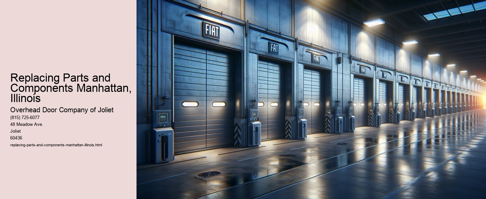

Replacing Parts and Components in Manhattan, Illinois: A Communitys Commitment to Longevity and Sustainability
In the quaint village of Manhattan, Illinois, the practice of replacing parts and components has become more than just a necessary task-its a testament to the community's dedication to sustainability, longevity, and an appreciation for the things that serve us. Nestled in the heartland of America, this small town embodies a unique blend of Midwestern values, where ingenuity meets practicality, and where the old is often renewed instead of discarded.
For the residents of Manhattan, replacing parts and components is not merely a mechanical task-it is an art form. Whether it involves the family car, a beloved household appliance, or the town's infrastructure itself, the act of repair and replacement is deeply ingrained in the local ethos. This practice not only extends the lifespan of objects but also fosters a culture of resourcefulness and respect for craftsmanship.
In an era where planned obsolescence is rampant, and the lure of the new often overshadows the value of the old, Manhattan stands as a beacon of a countercultural movement. The residents here understand that replacing a part instead of an entire item is not only economically savvy but environmentally conscious.
Local businesses thrive on this ethos.
Moreover, the practice of replacing parts and components fosters a sense of empowerment among the town's residents. It encourages individuals to learn new skills and understand the mechanics behind the tools and devices they rely on daily. Workshops and community classes aimed at teaching repair skills are common, allowing knowledge to flow freely and enabling residents to become self-reliant.
The local schools have also embraced this philosophy, integrating practical skills training into their curricula. Students are taught the importance of maintenance and repair, gaining hands-on experience that prepares them for real-world challenges. This educational approach not only equips the younger generation with valuable life skills but also instills in them an appreciation for sustainability and resource conservation.
Even the local government supports this initiative by prioritizing the maintenance and repair of public infrastructure. Instead of opting for costly overhauls or replacements, the town invests in regular upkeep and the strategic replacement of components. This approach not only saves taxpayer money but also ensures that the town's infrastructure remains functional and safe for all residents.
In conclusion, the practice of replacing parts and components in Manhattan, Illinois, is a reflection of the community's values. It represents a commitment to sustainability, a respect for craftsmanship, and an appreciation for the longevity of the things that serve us. As the world continues to grapple with the challenges of waste and resource depletion, Manhattan offers a model of how communities can thrive by embracing practices that honor the past while securing a sustainable future.
Troubleshooting Common Issues Manhattan, Illinois